One recording, two answers

The Grammys' ruling on Movin' To The Sun, as The Australian reported it on 16 October 2026
Songwriting categories
OUT
It uses material from Imael Angel's AI-generated original
Performance categories
COULD STILL QUALIFY
HUGEL and Ultra Naté could still be eligible
makeyourmindup · from The Australian, 16 October 2026